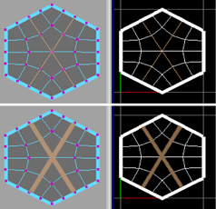
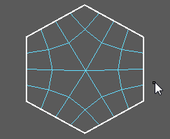
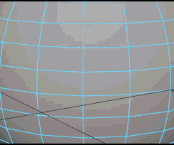
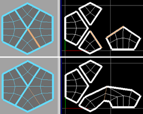
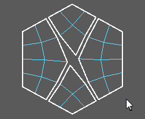
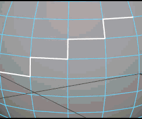
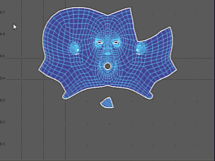

- 将一个壳分离为多个壳并与纹理的不同部分对应。
- 允许 UV 纹理坐标在“展开”(Unfold)或“优化”(Optimize)过程中以尽可能减少扭曲/重叠的形式自由展开。
- 接合通过在“自动映射”(Automatic Mapping)过程中创建的小壳。
| 目标 | 操作 | 示例 |
|---|---|---|
|
沿选定边分离（切割）UV 壳。 |
|

|
|
以交互方式分离（切割） UV 边 |
在 UV 编辑器中分离 UV 边
在视口中分离 UV 边
|


|
|
允许 Maya 分离（切割）边（或选择接缝边） |
|
|
|
沿选定边附加（缝合）UV 壳。 |
|

|
|
以交互方式附加（缝合）UV 边 |
在 UV 编辑器中缝合 UV 边
在视口中缝合 UV 边
注： 在“视口”(Viewport)和“UV 编辑器”(UV Editor)之间移动时，“3D 切割和缝合 UV 工具”(3D Cut and Sew UV Tool)将自动更改为“切割工具”(Cut Tool)。
|


|
|
沿选定边附加（缝合）UV 壳并一起移动壳。 |
|

|
|
合并选定 UV。 |
“合并 UV”(Merge UVs)仅合并共享相同的顶点的 UV。可以为 Maya 将移动 UV 以合并它们的最大距离指定一个选项。 |
|
|
自动附加并移动小壳。 |
在执行“移动并缝合”(Move and Sew)操作之后，可以选择该节点 (polyMapSewMove)，然后在“属性编辑器”(Attribute Editor)或“通道盒”(Channel Box)中编辑它来调整“面数”(Number Faces)。 |
注释
- 不能切割单个边，除非它与边界接触。
- 在“UV 编辑器”(UV Editor)中，使用可在切割之后选择 UV 片段。
- 在“UV 编辑器”(UV Editor)中使用“切割工具”(Cut Tool)或“缝合工具”(Sew Tool)时，Maya 将遵循每个 UV 的当前固定状态（即，固定的 UV 在切割时将保持不动，并且仅在可以不移动它们的情况下对其进行缝合时才进行缝合）。